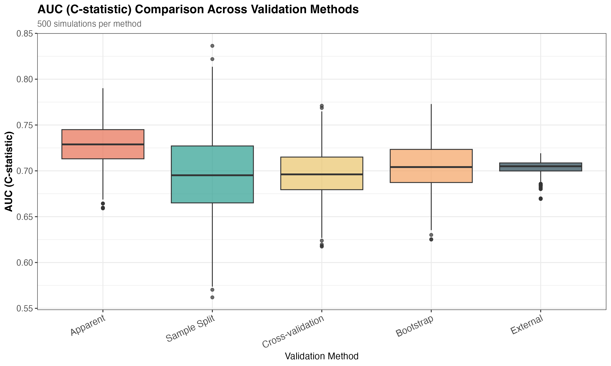
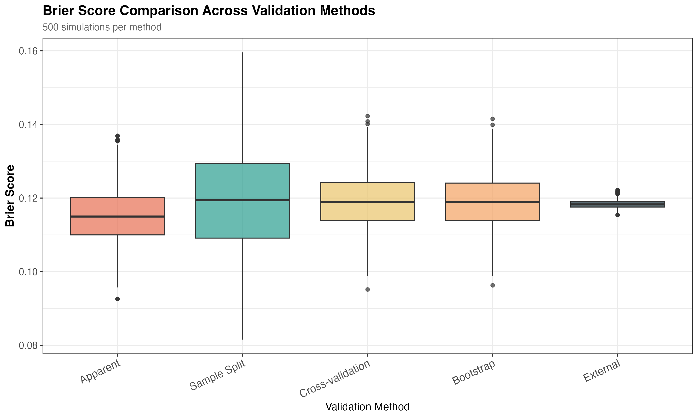

| Method | AUC | Cal. Slope | Brier | MAPE |
|---|---|---|---|---|
| Apparent | 0.728 (0.022) | 1.000 (0.000) | 0.116 (0.007) | 0.232 (0.014) |
| Bootstrap | 0.704 (0.025) | 0.879 (0.021) | 0.120 (0.007) | 0.235 (0.014) |
| Cross-validation | 0.697 (0.026) | 0.817 (0.041) | 0.120 (0.007) | 0.235 (0.014) |
| Sample Split | 0.697 (0.048) | 0.835 (0.287) | 0.121 (0.014) | 0.235 (0.016) |
| External | 0.704 (0.007) | 0.871 (0.107) | 0.119 (0.001) | 0.235 (0.007) |
Comparing Internal Validation Methods for Clinical Risk Prediction
A Simulation Study
1 Overview
This simulation study compares three internal validation methods (sample splitting, cross-validation, and bootstrap) for clinical prediction models. It uses 200 simulations with realistic sample sizes (n=858) and evaluates performance across several metrics.
NoteKey Findings
Bootstrap validation performs best overall, with minimal bias and exceptional stability, especially for calibration assessment.
Sample splitting is unreliable - it shows extreme variability in calibration slope estimates (SD 14 times higher than bootstrap), making it unsuitable for calibration assessment.
Cross-validation is acceptable as an alternative to bootstrap, providing reasonably stable estimates with slight pessimistic bias.
Main recommendation: Use bootstrap validation (200+ samples) for internal validation. Cross-validation is acceptable if bootstrap is too computationally intensive. Avoid sample splitting.
2 Background
Clinical prediction models often perform worse in new patients than in development data due to overfitting. Internal validation provides realistic performance estimates without requiring external datasets. However, multiple methods exist with limited guidance on which performs best.
Study aim: Compare sample splitting, 10-fold cross-validation, and bootstrap optimism correction against external validation (gold standard) across discrimination, calibration, and overall accuracy metrics.
3 Methods
3.1 Data Generating Process
Simulated scenario: - Binary outcome with 15% prevalence - 10 continuous predictors (X₁…X₁₀), all ~N(0,1) - Logistic regression with mixed effect sizes - Intercept (α = -1.956) calculated to achieve exactly 15% prevalence
Model equation:
\[ \text{logit}(P(\text{outcome}=1)) = -1.956 + 0.45X_1 + 0.40X_2 - 0.35X_3 + ... + 0.05X_{10} \]
3.2 Sample Sizes
- Development: n=858 (129 events, EPV=12.9)
- Determined using principled criteria (Riley et al. 2020) via
samplesizedevpackage
- Determined using principled criteria (Riley et al. 2020) via
- External validation: n=1e+05 (asymptotic truth)
- Simulations: 200 iterations
3.3 Methods Compared
For each simulation:
- Apparent validation - Optimistic test on development data (baseline)
- Sample Split - 70/30 split
- 10-fold Cross-validation - Stratified folds with pooled predictions
- Bootstrap - Harrell’s optimism correction (200 resamples)
- External validation - Independent large dataset (gold standard)
3.4 Performance Metrics
- Discrimination: AUC (C-statistic)
- Calibration: Calibration slope (1.0 = perfect; <1.0 = overfitting)
- Overall accuracy: Brier score, Mean Absolute Prediction Error (MAPE)
4 Results
4.1 Performance Summary
Table 1 shows performance across all validation approaches. Apparent validation is optimistic (as expected), while all internal methods successfully correct for this optimism to varying degrees.
Bootstrap and cross-validation show much lower standard deviations than sample splitting, particularly for calibration slope (Bootstrap SD: 0.021 vs. Sample Split SD: 0.287).
4.2 Bias and Precision
Table 2 compares internal methods to external validation. Lower bias and RMSE indicate better performance.
| Method | AUC | Cal. Slope | Brier | MAPE |
|---|---|---|---|---|
| Bootstrap | 0.000 (0.024) | 0.008 (0.124) | 0.000 (0.007) | 0.000 (0.008) |
| Cross-validation | -0.007 (0.026) | -0.054 (0.149) | 0.000 (0.007) | 0.000 (0.008) |
| Sample Split | -0.007 (0.048) | -0.036 (0.311) | 0.001 (0.014) | -0.000 (0.012) |
Bootstrap shows minimal bias across all metrics - Cross-validation slightly underestimates calibration slope (pessimistic) - Sample splitting has low bias on average but very high RMSE due to extreme variability
4.3 Visual Comparison
The following plots show the distribution of each metric across 200 simulations:




Figure 2 demonstrates why sample splitting is problematic: the wide spread of calibration slope estimates makes it unreliable for calibration assessment, even though the average bias is small.
5 Discussion
5.1 Main Findings
Bootstrap validation consistently outperformed other methods: - Minimal bias across all metrics (AUC bias: 0.000, calibration slope bias: 0.008) - Most stable estimates (especially calibration slope SD: 0.021) - Lowest RMSE for calibration slope (0.124)
Cross-validation performed well as a computationally simpler alternative, with slight pessimistic bias for calibration but acceptable variability.
Sample splitting was problematic due to extreme variability (calibration slope SD 14× higher than bootstrap), making individual estimates unreliable despite low average bias across many simulations.
5.2 Comparison with Smith et al. (2014)
These findings align with Smith et al.’s study comparing internal validation methods. Both studies found: - Bootstrap, cross-validation (with replication) methods provide unbiased estimates - Sample splitting shows problematic performance - Bootstrap validation is recommended as the primary approach
This study differs from their work by: 1. Higher EPV: We used EPV=12.9 (via principled sample size calculation) vs. their EPV=5 (intentionally low to test challenging scenarios) 2. Multi-metric focus: While Smith et al. emphasized the C-statistic, we evaluated discrimination, calibration, and overall accuracy simultaneously 3. Calibration emphasis: We highlight that sample splitting’s variability problem is particularly severe for calibration assessment
The consistency between studies strengthens the evidence for bootstrap validation in clinical prediction modeling.
5.3 Practical Recommendations
For researchers developing prediction models:
- Primary recommendation: Use bootstrap optimism correction (≥200 samples) via established implementations (e.g.,
rmspackage) - Alternative: 10-fold cross-validation with pooled predictions is acceptable if bootstrap is computationally prohibitive
- Avoid: Sample splitting for calibration assessment due to extreme variability
5.4 Limitations
- Single scenario (10 predictors, 15% prevalence, moderate discrimination)
- Logistic regression only (non-linear models may behave differently)
- Independent predictors (correlation might affect performance)
- Moderate sample size (n≈1,000); very small/large samples may show different patterns
5.5 Conclusions
For clinical prediction models with moderate sample sizes, bootstrap validation provides the most reliable estimates of external performance. Cross-validation is an acceptable alternative. Sample splitting should be avoided, especially for calibration assessment, due to extreme variability that makes individual estimates unreliable.
5.6 Code and Data Availability
All simulation code and generated data are available at [https://github.com/AshleyMDickson/internal_validation_paper.git].